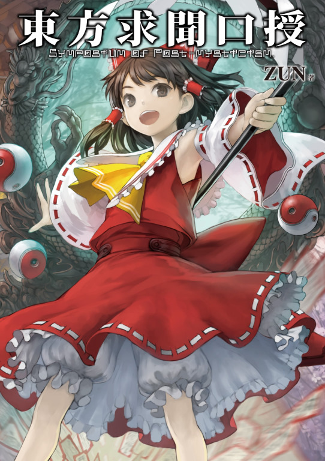

東方求聞口授 ～ Symposium of Post-mysticism

Fourth official Touhou Project book
Features a series of discussions between several characters and in-universe news articles and profiles
Release Year: 2012
Touhou Wiki